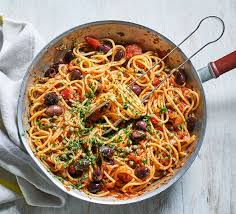

kamga pasta
Welcome to a simple and flavorful recipe for Kamga Pasta! This dish is easy to make, tasty, and perfect for a quick meal with a spicy, savory kick. Follow this step-by-step guide to prepare a comforting bowl of pasta with a twist of local flavor

Ingredients
- Water (enough to boil pasta)
- Salt (to taste)
- 200g pasta (your choice: spaghetti, penne, etc.)
- 1 ripe tomato, chopped
- 1 ripe tomato, chopped
- 1 small onion , chopped
- 1 garlic clove,minced
- 1 tablespoon vegetable oil pepper oil
- 1 table spoon mayonnaise
- Ground pepper or chili flakes
Instructions
- Boil the water
Bring a pot of water to a boil. Add a pinch of salt once it's boiling.
- Cook the pasta
Add your pasta to the boiling water. Let it cook until it's almost done (check the package for timing, usually 7–10 minutes)
- Prepare the spice mix
While the pasta is cooking, in a small bowl, mix together the chopped tomato, onion, garlic, ground pepper, oil, and mayonnaise
- Add the spices to the pasta
When the pasta is nearly ready (still slightly firm), lower the heat. Add the spice mix directly into the pot with the pasta and stir well.
- Finish cooking together
Let the pasta and spices cook together for another 2–3 minutes, stirring occasionally so the flavors blend.
- Serve and enjoy
Turn off the heat. Let it sit for a minute to absorb flavors, then serve hot!